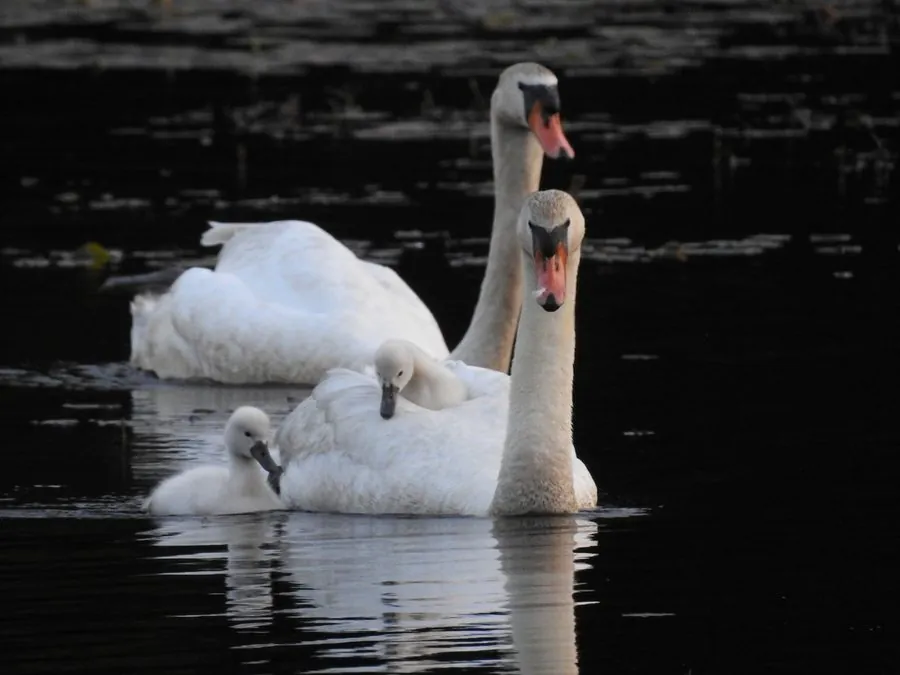

鸟类 · 动物界
疣鼻天鹅 Cygnus olor

喙基长着黑色瘤状突起的白色天鹅，游泳时常把双翅拱起如船帆，是欧洲公园和城市湖泊中最常见的观赏水鸟。
- 分类
- 门脊索动物门纲鸟纲目雁形目科鸭科属天鹅属
- 栖息环境
- 湖泊、河流、沼泽与城市公园水面，喜在浅水区活动
- 地理分布
- 欧洲、中亚和东亚部分地区，被广泛引入北美、澳大利亚等地
- 保护级别
- IUCN 无危（LC）；中国境内多为引进饲养种群
物种志
疣鼻天鹅体长 125–160 cm，体重 6–15 kg，翼展 200–240 cm，是体形最大的天鹅之一。它的全身羽毛洁白，喙橙红色，喙基长着一个黑色的瘤状突起（雄鸟更明显），因此得名；腿黑色。游泳时它常把双翅向上拱起，像鼓起的船帆，姿态雍容。
疣鼻天鹅分布于欧洲、中亚和东亚部分地区，被广泛引入北美、澳大利亚和南非的公园湖泊。它们栖息在湖泊、河流、沼泽和潟湖，以水生植物、谷物和水生昆虫为食。疣鼻天鹅的叫声沙哑而少鸣，因此又被称为“哑天鹅”。繁殖期在水边筑起巨大的草堆巢，每窝产卵 5–8 枚，孵化约 35–38 天。由于适应人工环境、种群数量稳定，疣鼻天鹅被列为无危物种，在中国属于引进饲养和偶见野化种群。
形态与习性
- 食性水生植物、谷物和水生昆虫
- 体长125–160 cm
- 体重6–15 kg
- 翼展200–240 cm
- 繁殖每窝 5–8 枚卵，孵化约 35–38 天
- 寿命野外约 20 年
- 喙部喙基有黑色瘤状突起，雄鸟更明显
趣味知识
- 疣鼻天鹅的喙基长着黑色瘤状突起，是它与其它天鹅最明显的区别。
- 游泳时它常把双翅拱起如帆，姿态十分优雅。
- 疣鼻天鹅叫声沙哑而少鸣，所以又叫“哑天鹅”。
- 它们常被养在城市公园的湖泊中，是常见的观赏水鸟。